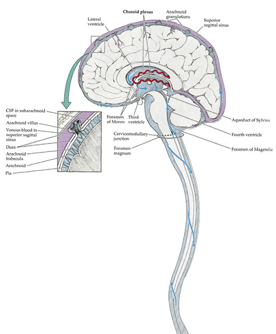

Neurology Lab 1 - Module 2 - Ventricles of the Brain: Page 2 of 2
Cerebrospinal fluid (CSF) flows through and around the brain. Cerebrospinal fluid is produced by the choroid plexes found in the lateral ventricles of both hemispheres of the brain. The CSF flows through the Foramen of Monro in each hemisphere, which drains the CSF into the third ventricle. The Aquiduct of Sylvius takes the cerebrospinal fluid to the forth ventricle and subsequently into the sub-arachnoind space that surrounds both the brain and the spinal cord. The connections from the fourth ventricle to the sub-arachnoid space are called the Foramen of Magendie and Luschka. The arachnoind granulations re-absorb the cerebrospinal fluid back into the blood stream. |
 |
| Tap on image to enlarge |
What would an obstruction of this flow pattern lead to? |
|
|
An obstruction to this flow pattern could lead to a build up of cerebrospinal fluid proximal to the obstruction which is also known as hydrocephalus. |
|
Where are the most likely points of obstruction? |
|
|
Foreman of Monro. Aquaduct of Sylvius. Foremen of Magendie and Luschka. |
|